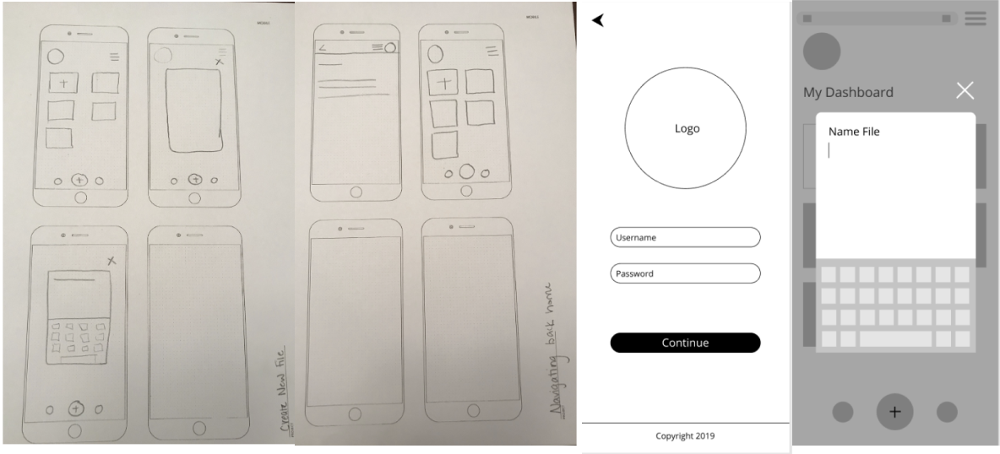
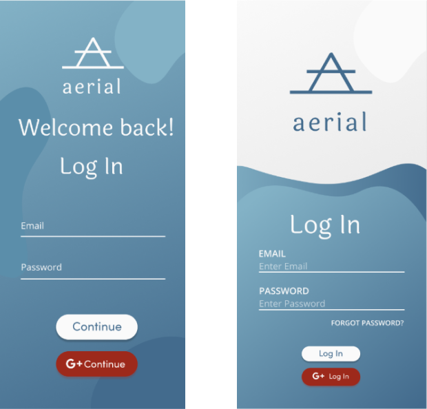
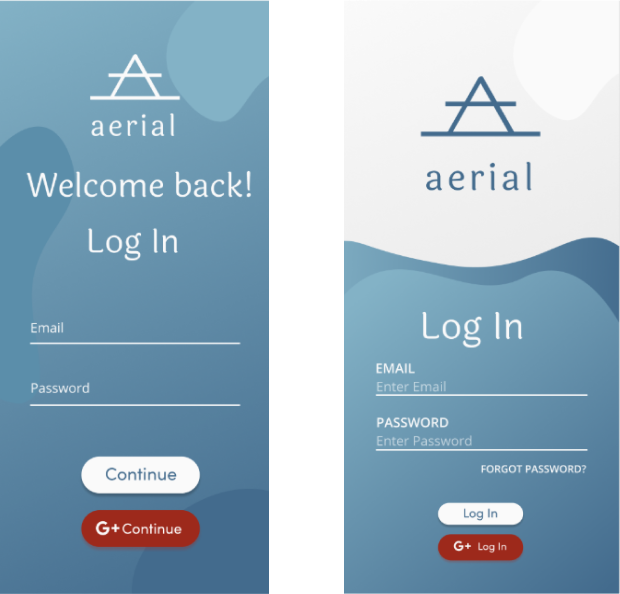

Happy Carrot
A large variety of recipe apps exist today. However not many food apps cater to plant based diet. Happy Carrot provides a unique user experience by allowing the user to create, share, and save plant-based recipes all in one place.
Problem
Today plant-based diets are quite popular. While there are many apps that cater to this diet, there is not an app that accommodates all of the user’s needs in one place. There is not an app that allows the user to search for recipes not only by specific plant-based diets, but search for recipes by ingredient, create recipes in app, create shopping lists, and create reminders to cook.

Solution
Happy Carrot is a plant-based recipe app allowing users to search, create, and share recipes. Happy Carrot also allows users to search for recipes by ingredient. Happy Carrot is a free app that provides a large amount of recipes and accommodates numerous plant-based diets.
Research
The first step was to complete a SWOT Analysis by analyzing competitors Oh She Glows, Forks Over Knives, and Yummly. I chose these apps because they are most popular in the healthy eating apps. All three of these apps cater to clean diets.

Analysis
The survey focused on these aspects:
- Do you cook by/for yourself or do you cook with/for somebody else?
- How often do you cook?
- How important is eating healthy for you?
- How often do you know exactly what you want to cook?
- When grocery shopping do you know exactly what you want to prepare before buying groceries or do you just buy the essential products and then figure out what to cook?
- Do you create your own recipes?
With the discoveries found through my survey, I was able to move forward to creating solutions. It was clear that users want:
- Users want to search for recipes by diet
- Users want an app that offers a variety of recipes
- Users want an app that offers personalization
- Users want a user friendly app
User Personas


User Stories
After completing the competitive analysis and user research I was able to construct informed User Stories. To construct the user stories I compiled a list of tasks new and returning users would need to complete when they would visit the app. After listing the tasks, I ordered them from highest to lowest priority.
- I want to sign up for a new account
- I want to discover new recipes
- I want to create my own recipes
- I want to search for recipes that cater to my diet
- I want to share recipes with friends and family
User Flows
User stories help me understand how the app will flow. I took the high priority tasks from my user stories and turned them into User Flows. These help me visualize the processes that need to be completed in the Minimum Viable Product (MVP) such as searching for a recipe, creating a recipe, and creating a new recipe.

Wireframes
Once I completed the user flows, I began constructing the Content Strategy (Happy Carrot) for the website. I wanted to make sure the website flowed nicely with a colorful, elegant theme. so the copy was written to reflect that. Other content planned for the website included photos to be used for illustrative elements.
The next step was to create the Wireframe Sketches (HC). I began by making sketches of the wireframes with pencil and paper. Once I had a strong idea of the design, I translated the sketches to Figma and tested them with a few users. The User Testing on the wireframes received very helpful feedback. This feedback helped me to start designing my high-fidelity prototype.
Branding
Modern, fluid, and playful
I started the Branding Research by first sketching the logo using pen and pencil. This way I was able to quickly iterate and make as many changes as possible. I wanted the logo to embody all of the brand words.
High-Fidelity Mockups
The Style Guide helped me create high-fidelity mockups for the app. These are the initial mockups adapted from my wireframe sketches.
 

User Testing Results
The ultimate user test was for the high-fidelity mockup. This was tested with three users to get their feedback. I made minor changes based on the preference test. I found that the users needed an easier way to identify the most important buttons such as sign up, create, and share. The users suggested the addition of minor changes such as:
- Files should save automatically
- Make create button easier to find
- Make share button easier to find
- Add back button to on-boarding screen
- Make sign up button easier to find
Conclusion
The process of creating Aerial was positive and negative. We were pleased to receive a lot of feedback from our user survey and in depth feedback on all testing. Without this user data we would lack focus. When creating Aerial we found the branding and the low-fidelity mockup process quite challenging.
The issue with the low fidelity mockups were that the results were inconclusive. The initial mockup lacked adequate information which made it very difficult to test with users. Users were simply lost by the lack of information on the screens. This was a drawback because we did not receive feedback on which direction to go and had to start over. This slowed the progression of creating Aerial.
Creating the branding for Aerial was difficult because we struggled to decide on the theme. We felt stuck for a long time because we struggled to visualize the theme. At first we wanted Aerial to have a light and airy theme, but it was challenging to execute and we doubted our ability to do so. Ultimately we decided to incorporate darker colors to provide contrast. As a result we were quite surprised that our brand ditched the light and airy approach.
Making these mistakes made us more aware of what needs to be done In the future. Next time we will be more willing to change our design ideas in the initial steps. We will also make sure to add more detail in our low fidelity mockups.
This project made me realize that I am a perfectionist to some degree. I could have just designed a light theme for Aerial to save time, but I was not satisfied with the design. I wanted to create contrast of light and dark. I also learned that without user feedback, a successful user experience is not possible.